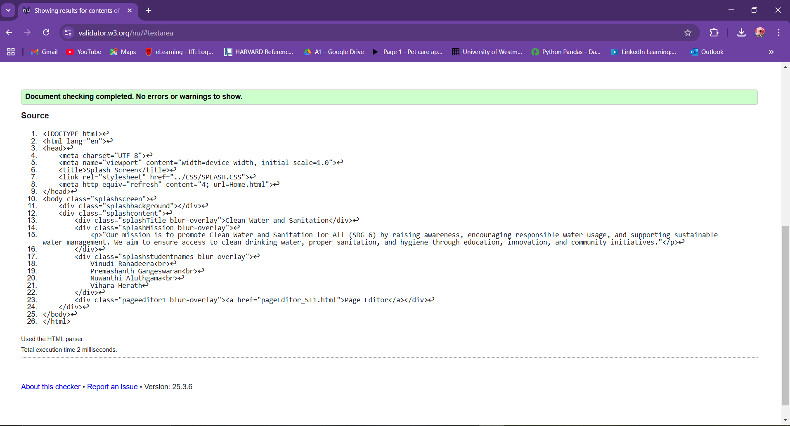
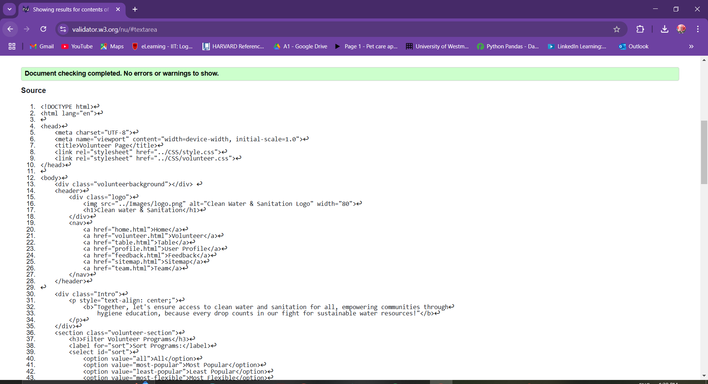
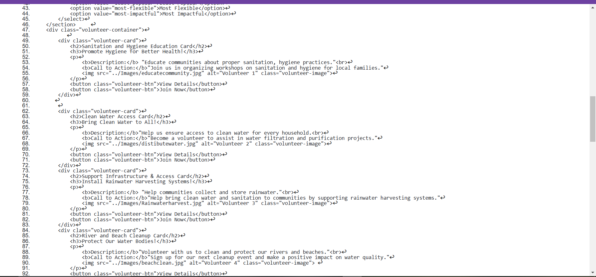
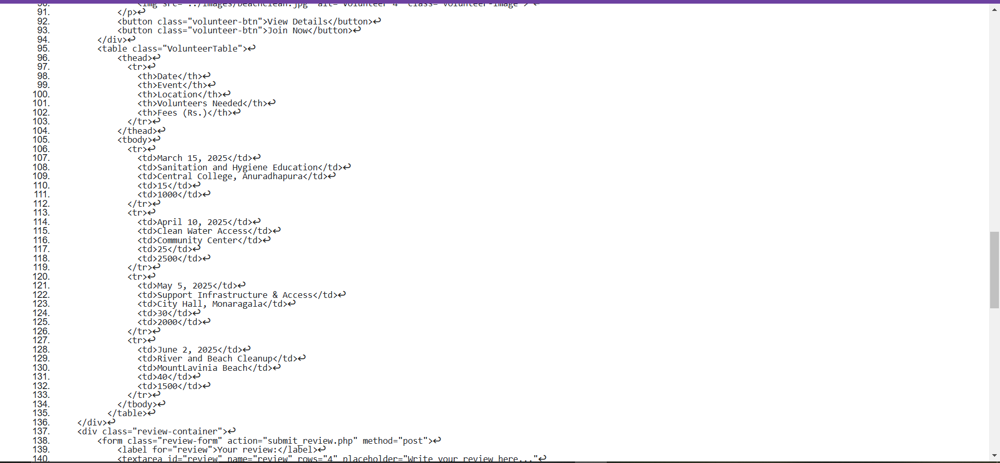
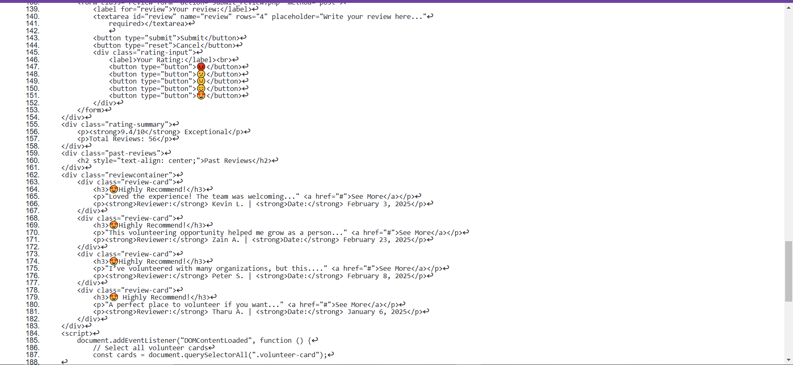
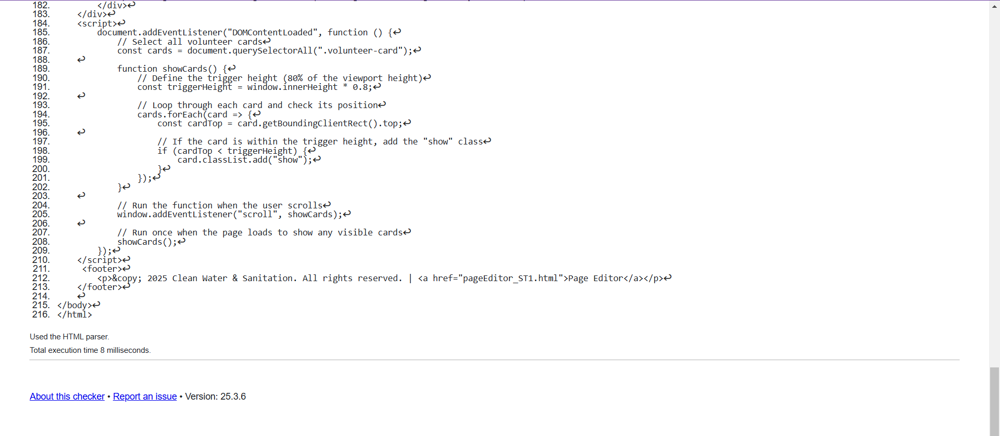
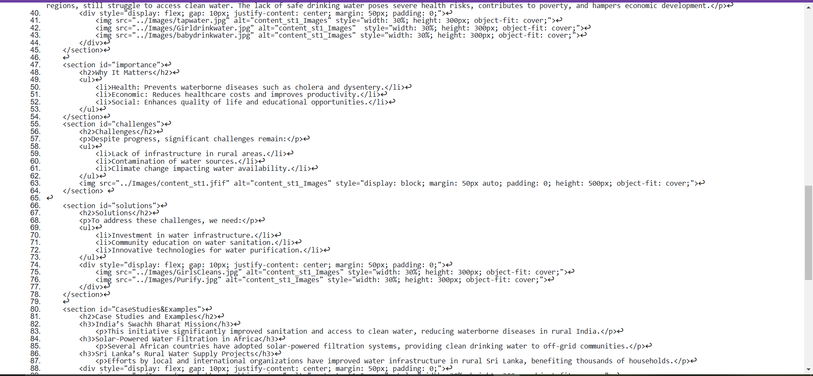
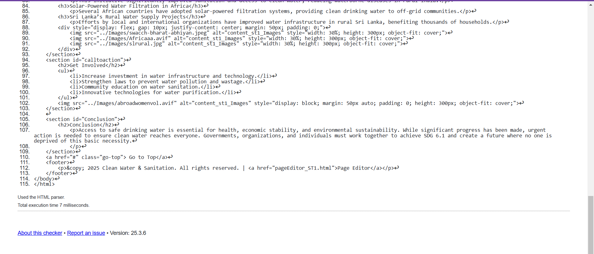

Splash Page validation report
The splash screen is the first visual element users see when visiting the website. It features a simple design with the brand's logo, a welcoming message, and a smooth loading animation. Ensuring all HTML tags are properly closed and images have alt attributes helped avoid validation errors and improve accessibility.

Back to Page Editor page
Volunteer Page validation report
The volunteer page provides information about available roles and an easy application form. It uses descriptive alt text for images and a clean HTML structure. Addressing validation errors, like unclosed tags, enhanced both the functionality and accessibility of the page.





Back to Page Editor page
Content Page validation report
The content page displays information in a clear, organized format. Proper use of semantic tags and alt attributes for images helped fix validation issues and ensure a better user experience. Regular validation checks proved useful in maintaining compliance with web standards.

